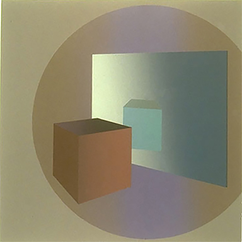

Sue Gollifer is a senior lecturer in Fine Art/Printmaking in School of Arts and Communication in the Faculty of Arts and Architecture at the University of Brighton. Her primary research is on 'the impact of new technology within the practice of Fine Art' and she has presented a number of evaluative and analytical papers on this subject at major international conferences.
Untitled M4 1977 Tektronix phaser print
